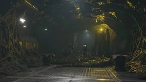
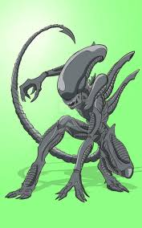
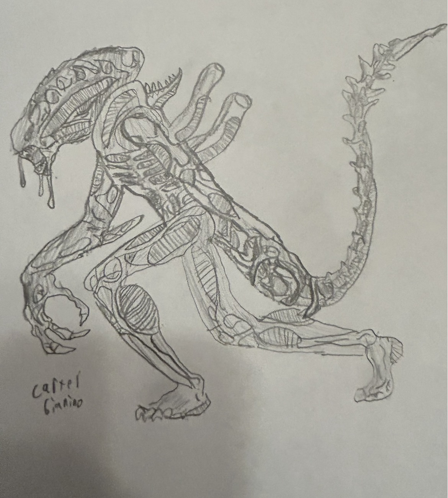
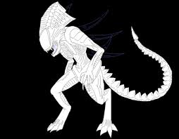
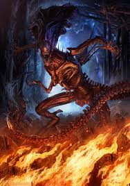

The hive mind is a super connected brain that controls all xenomorphs in the hive-All follow queens orders.
Telepathy-Mental
Pheromone-chemical

image by SoreThumBot From DeviantArts
Drones are the worker bees of the hive, Drones have a thin exoskeleton No armor plates Moderate durability, a smooth and elongated head, and stand about 7-8ft annd 300-400ibs. The xenomorph drone is tasked with:building and constructiong the hive, working for the queen, and very minimal defense for the hive.

image by zombiebasher64 from DeviantArt
Warriors are the fighters of the hive, Warriors are mainly tasked with defending the hive while also being tasked with catching hosts for reproduction. Warriors have a thick exoskeleton, Armor plates, High durability, a rigid and hardened head, and stand about 8-9ft tall and 500-600 ibs. Warriors can be created after harnessing a substance in the hive called royal jelly and using it for evolution.

Image drawn by carter Gianino
A Preatorian is a large xenomorph who is basically the queens royal guard. The Preatorian stands aboyut 10ft tall and has a crest on its head simular to a queen. To create a preatorian a queen must select a warrior, after the warrior is selected drones feed the warrior roytal jelly which causes the body of the warrior to change. This change releases a chemical that tells the other xenomorphs in the hive to attack it. If the changing warrior can survive this trial it would have successfully been transformed into a praetorian.

image by Dreamer-In-Shadows from DeviantArt
The queen can be created in many ways, Evolution, or another queen lays an egg that contains a royal facehugger. That facehugger lands on ahosts face and created a Queen. The queen is the leader of the hive. It can stand about 15-20ft tall and its armor is created with hardened Chitinous. The queen is noticable with its larke crown like crest that is located on the top of the queens head, the crest can also be used as armor. The queen can lay eggs and comand and tell the other xenomorphs what to do.

image by By arvalis from DeviantArt